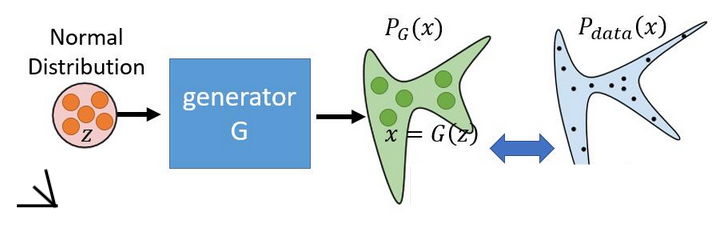
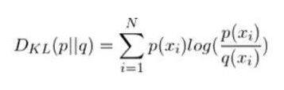
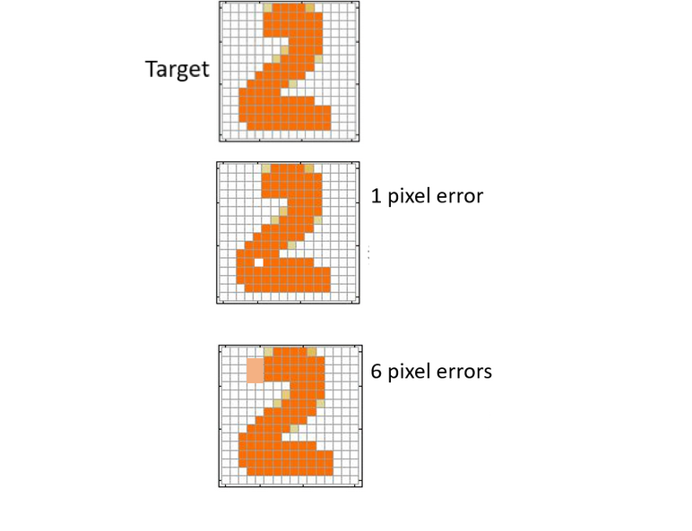
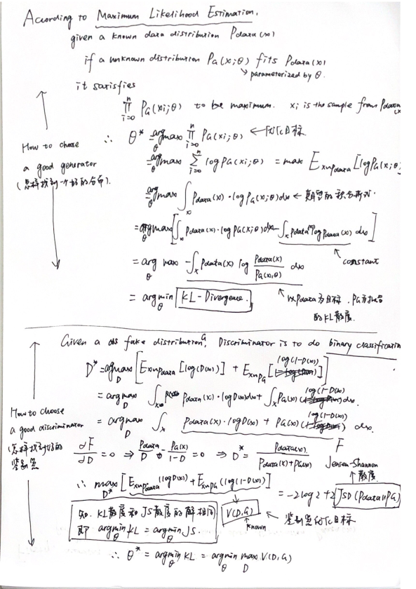
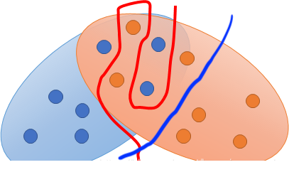

『Xu』Generative Adversarial Network (GAN) / KL Divergence
首先作为题外话，先介绍一下GAN其实是一种结构化学习。平是最常见的拟合/回归是一种非结构化学习，它们输出的是标量或者向量这些简单的数据，但是对于结构化学习可能输出的是序列、矩阵、树（例如可以学习语法解析树），所以GAN现在最常用的就是生成以假乱真的图片，因此是一种结构化学习。
GAN的主要目的就是拟合一个真实数据的分布，从而能够获得一个能够以假乱真的『生成器』，通过输入随机的噪声得到一个不能被轻易区分的『假』数据。下面这张图就很好的展现了GAN的作用，通过以假乱真的生成器，将输入的服从正态分布的随即噪声改造成一个近似于真实数据分布的数据。

那么既然GAN要做的是拟合一个真是数据分布，那么为了能够衡量真实数据分布和拟合出来的数据分布之间究竟是不是相似的需要的就是『KL Divergence / KL散度』。它的定义如下所示，

其中$p(x_i)$代表的是目标（真实）数据分布，$q(x_i)$代表的是拟合数据分布。KL散度的值越大表示两个分布之间的差别越大，当两者完全相同的时候值为0。其实从公式中很容易就能够了KL散度是如何表示两个分布之间的差距的，其中有一个部分是$log$之前的系数$p(x_i)$，它在直观上的解释就是那些出现概率比较大的地方（概率值大），如果分布差别比较大，那么就应该给予更大的惩罚（更大的权重，更大的误差）。
所以在GAN领域（包括自编码器），KL散度都有比较多的应用，目的就是为了能够生成一个比较符合真实数据分布的拟合数据分布。
接下来就是GAN的原理介绍：
首先GAN是由一个『生成器 / Generator』和一个『鉴别器 / Discriminator』组成的，整个训练阶段就是这两个网络不断地博弈。那么其实传统的『自编码器』也具有生成数据的功能（尤其是后半支『Decoder』部分），但是它和GAN相比的不足之处在于，自编码器优化的目标是尽可能的与真实数据的Loss小，如下所示。简单的使用Loss来判断导致了没有对全局信息进行考虑，所以虽然『1 pixel error』误差更小，但是其实更容易被区别出来是一个假数据。

因此，GAN中引入了一个分类网络『鉴别器 / Discriminator』，使用更加智能的方式来区分是否是伪造的数据。其实这样结合鉴别器与生成器（可以认为就是自编码器的后半支），也能够让鉴别器训练的更好。因为对于分类网络，分类的目标其实是将符合该分布和不符合该分布的数据区分开，然而想要人工获取丰富的『负样本 / 不符合分布的数据』是一个比较困难的事情。而通过生成器可以生成各种分布的数据（虽然目标是生成一个真实样本的数据，但是很难做到完全相同，而且在初始阶段大部分都是不符合的），所以能通过结合真实数据 / 生成的假数据更好更快地训练『鉴别器』，反过来也可以促进『生成器』更好地逼近真实数据。
以上就是GAN的大概思路，接下来是一些详细的推导（其实论文里都有）：

所以可以看到上述的推导过程其实也是分成两个部分做的，因此整个GAN的迭代求导过程就是一个交替求解的过程：首先固定G，解出对应的D，使得$V(D,E)=E{x\sim P{data}}logP(x)+E_{x\sim PG}log(1-D(x))$最大，即对正负样本判断最准确。然后再固定得到的D，使得$P{data}$和$P_{G}$之间的KL散度最小化。所以上述的最优化的目标函数也可以写成
$$argmin_GmaxD[E{x\sim P_{data}}logP(x)+E_zlog(1-D(G(z)))]$$
$z$就是输入的噪声，可以使遵循正态分布的噪声。
GAN存在的问题
从上述的推导以及优化的目标函数中我们可以看到，优化G的损失函数是
$$maxD V(D, E)=-2log2+2JSP(P{data}||P_G)$$
但是在实际情况中有一个经常发生的问题就是，$JSP(P_{data}||P_G)=log2$，导致整个loss为0，所以G无法被继续优化下去，产生这个问题的原因是：D判断出两个数据分布之间没有重叠，但是真实的情况却是如下图所示，从图中我们可以发现，虽然在连续空间中两个分布是存在重叠部分的，但是由于我们是离散采样，被训练得很强大的D能够找到一条曲线将两个分布下的样本区分开，从而判断出没有重叠的情况，因此在这种情况下，希望能够让D不具有那么强的区分能力，但是这又会导致G生成的假样本其实并不像真样本，但仍然不能被一个弱分类器区分开来，因此产生了十分矛盾的问题。我认为原因就是D学习的过快，过早得『过拟合』。我认为如果分类器给出的分类结果是图中蓝色线所表示的那样应该会好一些。

（GAN最好的情况应该是G能生成的样本输入到D的时候，D给出的概率应该是50%，即瞎猜，就像是数学大佬猜一道选择题，并且没有任何倾向，而这样的情况下优化G的损失函数的值反而不等于0。）